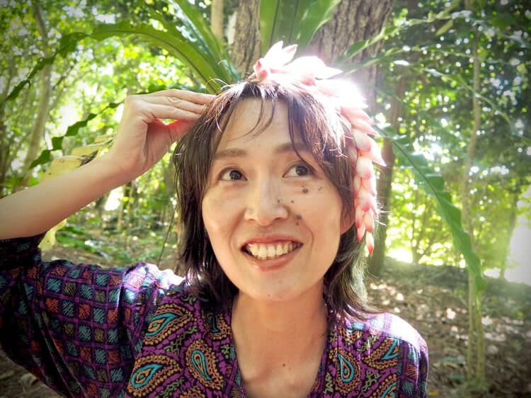

MIYAKOJIMA • OKINAWA
Updated May 20262026年5月更新
My Miyakojima.
A curated bilingual guide to Miyakojima.
英語対応のお店やスポットを紹介する 宮古島のバイリンガルガイド。
Places, people, and moments. 宮古島の場所、人、そして日常のひとコマ


Recently Added新しく追加
New around Miyakojima 宮古島の新しいおすすめ
Fresh monthly features and local recommendations added as the island moves through the season.
季節の移り変わりに合わせて、毎月新しい特集やおすすめを追加しています。
Curated May 2026
Fresh food, stays, transport, wellness, and lifestyle recommendations.
食事、宿泊、移動、ウェルネス、ライフスタイルの新しいおすすめ。
May Feature5月の特集Hair Salon Sanin
A calm creative profile rooted in care and connection.
人とのつながりと丁寧な時間を大切にするサロン特集。
Featured This Month今月のおすすめLaso Laso
Beauty, lifestyle, and a soft local recommendation.
美容、ライフスタイル、宮古島らしいやさしいおすすめ。
FEATURED THIS MONTH 今月のピックアップ

CREATIVE SPOTLIGHT クリエイティブ特集

MAY FEATURE
New Profile新しい特集
Hair Salon Sanin
ヘアサロン サニン
A quiet beauty space in Miyakojima shaped by care, calmness, and personal connection — offering an experience that feels both welcoming and deeply local.
人とのつながりや心地よさを大切にした、 宮古島のプライベートサロン。
A Quiet Intention 静かな想い
A curated bilingual lifestyle space featuring selected creatives, businesses, and stories rooted in Miyakojima’s culture.
宮古島の文化に根ざした、 厳選されたクリエイターやお店、ストーリーを紹介する バイリンガルのキュレーション型ライフスタイル空間です。
Get Discovered by Visitors to Miyakojima
宮古島を訪れる人に見つけてもらう
My Miyakojima is not just a website — it is a long-term discovery platform designed to help your business be found through Google search by people already interested in Miyakojima.
My Miyakojima は単なるウェブサイトではなく、 宮古島に興味を持つ人にGoogle検索を通して見つけてもらうための 長期的な発信プラットフォームです。
🔎 Google Search Visibility (SEO)
Your business becomes searchable on Google — not just visible on Instagram. This means people actively searching “Miyakojima restaurants”, “salon”, “things to do” can discover your business naturally.
Instagramだけでなく、Google検索から直接見つけてもらえます。 「宮古島 レストラン」「サロン」「観光」などの検索に対応。
📈 Long-Term Traffic (Unlike Social Media)
Instagram posts disappear within hours. Your feature on My Miyakojima stays online and continues bringing visitors over time.
SNS投稿と違い、掲載ページは残り続け、 長期間にわたってアクセスが期待できます。
🌏 Bilingual Exposure (Tourists + Locals)
Your business is introduced in both English and Japanese, allowing you to reach international travelers and local customers at the same time.
英語と日本語で紹介することで、 観光客と地元客の両方にアプローチできます。
✨ Curated Platform (Higher Value Exposure)
This is not a crowded listing site. Only selected places are featured, allowing your business to stand out clearly.
一覧サイトではなく厳選掲載のため、 他に埋もれずしっかり目立つことができます。
🧭 Designed to Convert Visitors into Customers
Pages are structured to guide users toward real action — visiting your store, making a reservation, or contacting you.
閲覧だけでなく、来店・予約・問い合わせにつながる設計になっています。
🚀 SEO Strategy Built-In
Content is structured with keywords, internal linking, and page flow to improve your visibility on Google over time.
キーワード設計や内部リンクにより、 検索結果で見つかりやすくなる構成にしています。
🤝 Early Partner Advantage
As the platform grows, early featured businesses gain stronger visibility and authority. Joining early gives you a long-term advantage.
初期掲載により、サイト成長とともに より強い露出効果が期待できます。
🏝️ Built for Miyakojima Businesses
Perfect for restaurants, salons, guesthouses, rentals, and experiences that want to attract customers beyond Instagram.
飲食店、サロン、宿泊施設、レンタカー、体験など、 Instagram以外で集客したい方に最適です。
📍 Location-Based Discovery
Your business can be found by people already planning their trip to Miyakojima. We target search intent — not random scrolling — meaning higher quality visitors.
宮古島に来る予定の人に向けて、 「探している人」に届く導線を作ります。
💼 Brand Positioning (Not Just Promotion)
Your business is presented as part of Miyakojima’s lifestyle and culture — creating trust, story, and long-term brand value beyond simple advertising.
単なる宣伝ではなく、 宮古島のストーリーの一部として紹介することで信頼感を高めます。
Grow your presence in Miyakojima.
宮古島での集客を、次のレベルへ。
Be discovered by travelers already searching for Miyakojima.
宮古島に興味を持つ旅行者に、あなたのサービスを届けます。
Coming in May
5月の新しい内容
More Lodging Recos
宿泊施設の追加
Lifestyle Boutiques
ライフスタイルショップ
More Food & Local Spots
飲食店・ローカルスポット
Creative Profiles
クリエイター特集（5件）
And More
その他いろいろ